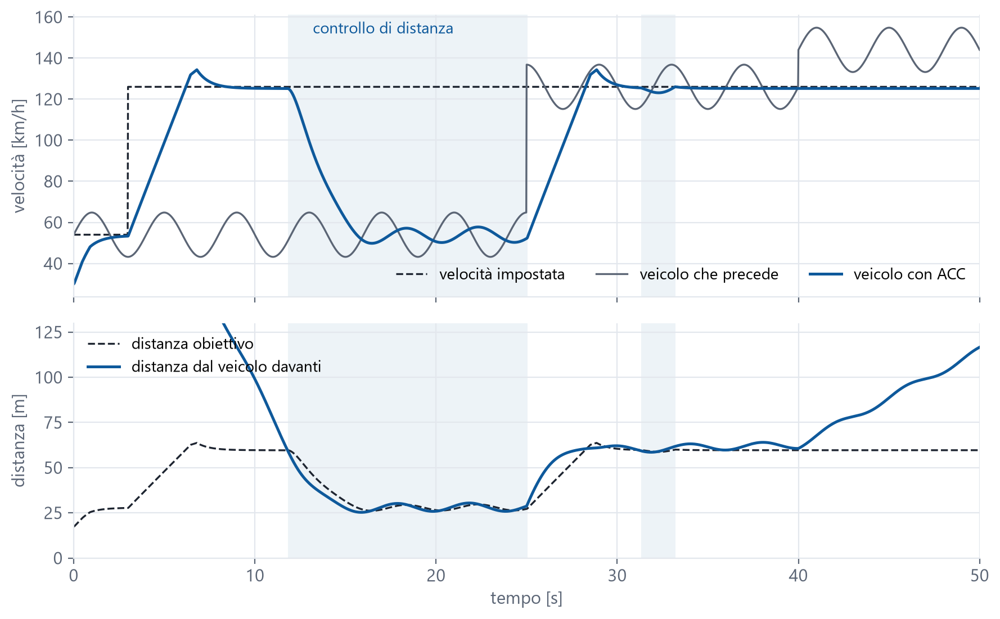
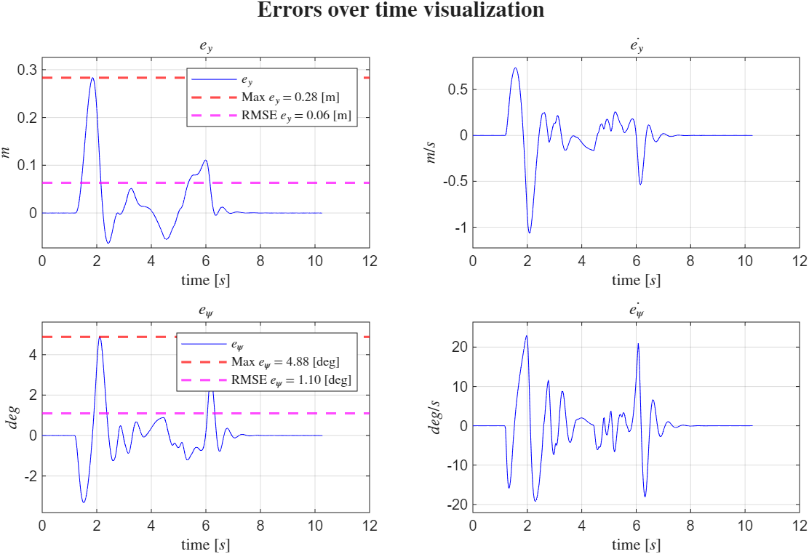

Context
In the Autonomous Driving Systems course, the labs asked us to design, on given vehicle models, the controllers of two ADAS functions: longitudinal control with adaptive cruise control, and lateral control with path tracking. The models include wheel dynamics and tyres with the Pacejka formula, so the controllers have to be tested also where the vehicle behaviour is no longer linear.
Adaptive cruise control
The high-level controller computes a desired acceleration and works in two modes. In speed control a PID tracks the speed set by the driver. When the vehicle closes in on another one, distance control takes over: a second PID keeps a target distance equal to a minimum distance of 4 m plus the speed times a time gap of 1.6 s.
Switching between the two modes uses hysteresis logic, so that the controller does not keep toggling when the distance is close to the threshold. The low level converts the desired acceleration into wheel torque through the inverse vehicle model: inertia, aerodynamic drag, rolling resistance and road grade.

Path tracking with LQR
For lateral control I used an LQR regulator based on the single-track model written in terms of the errors with respect to the trajectory: lateral error, yaw error and their derivatives. At each step the controller finds the trajectory point closest to the vehicle, computes the errors and commands the front-wheel steering; a separate PI regulates the speed through the motor torque.
The tests use two paths: an obstacle avoidance with a 5 m lateral shift and a figure-eight skidpad. The controller runs at 50 Hz on a full four-wheel vehicle model, like a real control unit.
Revising the controller
The first version worked well in obstacle avoidance at 40 km/h, with a maximum error of 3 cm, but left the trajectory at 60 km/h and accumulated error on the skidpad. Reviewing the design, I found and fixed three issues:
- Tyre cornering stiffness. In the model used to compute the gains I had entered the shape factor of the Pacejka formula instead of the actual cornering stiffness, which is given by B·C·D·Fz and is more than 100 times larger. With the correct values, about 119,000 and 167,000 N/rad per wheel, the LQR design matches the real vehicle.
- Curvature feedforward and discrete design. I added a feedforward steering term computed from the curvature of the reference and from the understeer gradient, so the LQR only has to correct the residual errors. The gains are now computed in discrete time at the controller's 50 Hz rate, with more weight on the yaw error.
- Geometric lateral error. The lateral error was obtained by integrating its derivative, so on a long path it slowly drifted: the controller thought it was on the trajectory while moving away from it. It is now computed as the signed distance from the closest reference point.



At 40 km/h the initial version was more precise in obstacle avoidance (3 cm against 13 cm) thanks to more aggressive gains, but only the corrected one stays below 30 cm in all four tests, at 40 and 60 km/h on both paths.
Above 60 km/h obstacle avoidance requires lateral accelerations close to 9 m/s², which is the grip limit of the tyres: there an LQR designed on a linear model is no longer enough, and a controller that accounts for the limits, such as an MPC, is needed.
What I learned
These labs showed me how much a controller depends on the model it is designed on: a wrong parameter in the tyre model or a drifting error estimate is enough to make a regulator fail that, in the simplest case, seemed to work perfectly. I learned to test controllers on scenarios that are different from, and harsher than, the design case, and to look for the cause of strange behaviour in the simulation data instead of tweaking the gains by trial and error.